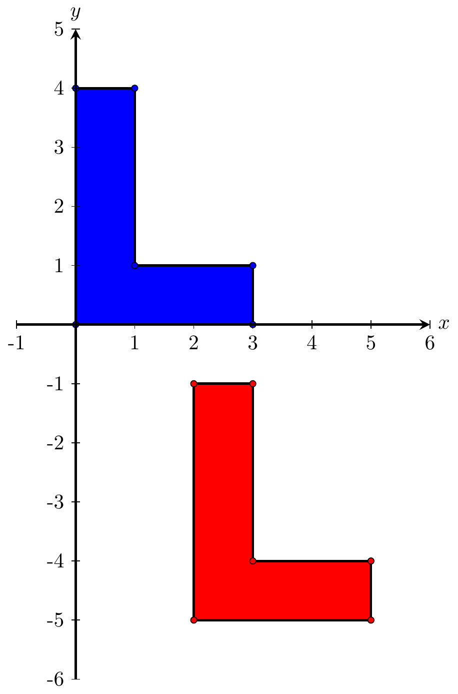

1.3 La translation
Définition 1.4 La translation d’une matrice de points \(P\) en coordonnées homogènes dans la direction \(\overrightarrow{t}=[t_1,t_2]\) est donnée par le produit matriciel suivant
\[\begin{align*}
P'=\begin{bmatrix}
1 & 0 &t_1\\
0 & 1 &t_2\\
0&0&1
\end{bmatrix}P
\end{align*}\]
Exemple 1.4 Effectuez une translation du L suivant le vecteur \([2,-5]\).

Figure 1.6: Une translation de la lettre L suivant le vecteur \([2,-5]\).